#11783 Carry On 10 - Cleo, Liebe und Antike *OmU*
Alternativ: Carry On Cleo
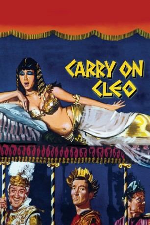 
 IMDB-Wertung: 6.7 / 10
IMDB-Wertung: 6.7 / 10  Metascore: 0
Metascore: 0 
Während der römischen Eroberung Britanniens geraten die beiden Briten, Hengist Pod und Horsa, in römische Gefangenschaft. Als sie bei ihrer Flucht in Rom in einen Hinterhalt geraten, entkommt Horsa, während Hengist das Leben Cäsars rettet. Dankbar befördert Cäsar ihn zu seinem Leibwächter, der von nun an alle Hände voll zu tun hat, in dem Gewirr von Intrigen zwischen Kleopatra und Mark Anton nicht nur das Leben Cäsars zu retten.
Jahr: 1964
Dauer: 92 Minuten
FSK:
Land: England Studio: Carol Media HomeTonspuren:
Untertitel:
Auflösung: 720p (1184x720) Größe: 1280 MB
Genre: Komödie, Abenteuer, Liebe, Geschichte
Regisseur: Gerald Thomas
Drehbuch: Talbot Rothwell, William Shakespeare
Soundtrack: Eric Rogers
Darsteller:
- 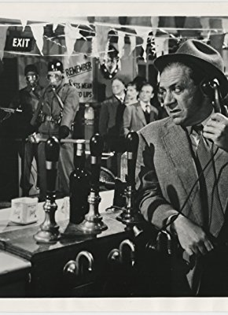 Sidney James als Mark Antony
 Kenneth Williams als Julius Caesar
Kenneth Williams als Julius Caesar- 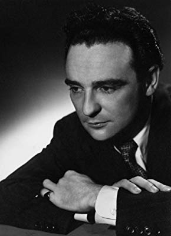 Kenneth Connor als Hengist Pod
- 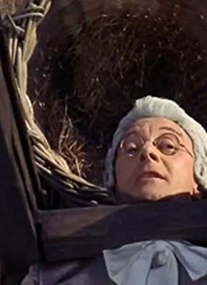 Charles Hawtrey als Seneca
- 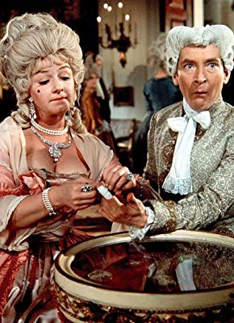 Joan Sims als Calpurnia
- 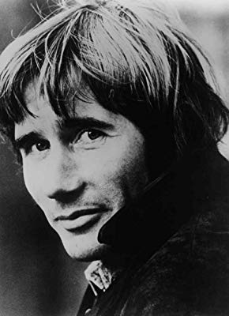 Jim Dale als Horsa
- Amanda Barrie als Cleopatra
- 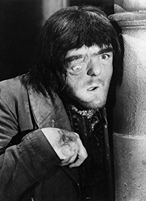 Victor Maddern als Sergeant-Major
- Julie Stevens als Gloria
- Sheila Hancock als Senna Pod
- Jon Pertwee als Soothsayer
- Brian Oulton als Brutus
- 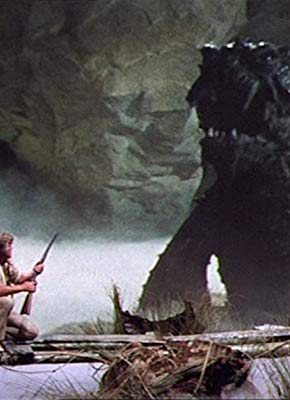 Peter Gilmore als Galley Master
- 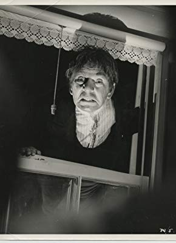 Ian Wilson als Small Messenger
- 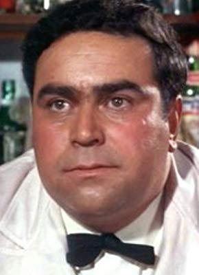 Gertan Klauber als Marcus
- Warren Mitchell als Spencius
- 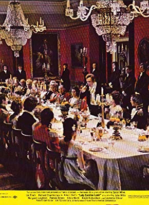 Victor Harrington als Scribe (uncredited)
- 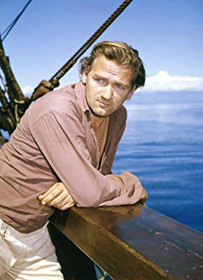 Percy Herbert als Guard (uncredited)
- 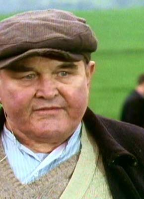 Norman Mitchell als Heckler (uncredited)
- 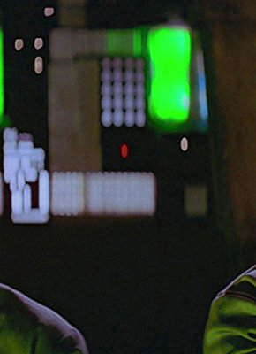 Reg Thomason als Citizen (uncredited)
- Wanda Ventham als Pretty Bidder (uncredited)
- Francis De Wolff als Agrippa
- Michael Ward als Archimedes
- Tom Clegg als Sosages
- Tanya Binning als Virginia
- David Davenport als Bilius
- Brian Rawlinson als Hessian Driver
- Michael Nightingale als Ancient Briton
- Peter Jesson als Seth, Horsa's Companion
- E.V.H. Emmett als Narrator
- Jack Arrow als Senator (uncredited)
- Peter Avella als Horsa's Companion (uncredited)
- Gloria Best als Hand Maiden (uncredited)
- Jimmy Charters als Citizen (uncredited)
- Peggy Ann Clifford als Willa Claudia (uncredited)
- Billy Cornelius als Horsa's Companion (uncredited)
- Bill Douglas als Second companion (uncredited)
- Sally Douglas als Antony's Dusky Maiden (uncredited)
- Maurice Dunster als Citizen (uncredited)
- Hugh Elton als Soldier (uncredited)
- Norman Fisher als Senator (uncredited)
- Joanna Ford als Vestal Virgin (uncredited)
- Peter Fraser als Horsas companion (uncredited)
- Jill Goldston als Citizen (uncredited)
- Pat Hagan als Senator (uncredited)
- Patrick Halpin als Citizen (uncredited)
- Mark Hardy als Guard at Caesar's Palace (uncredited)
- Walter Henry als Roman Soldier (uncredited)
- Gloria Johnson als Vestal Virgin (uncredited)
- Judi Johnson als Gloria's Bridesmaid (uncredited)
Datei: X:\7+mehr(A-Z)\Carry On\Carry On 10 - Cleo, Liebe und Antike OmU (1964, FSK, 1184x720).mp4 seit 20.09.2019
Festplatte: HD Collection-7+mehr(A-Z)+Person
 Es gibt insgesamt 33 Filme in der Gruppe '7+mehr(A-Z)\Carry On'
Es gibt insgesamt 33 Filme in der Gruppe '7+mehr(A-Z)\Carry On'